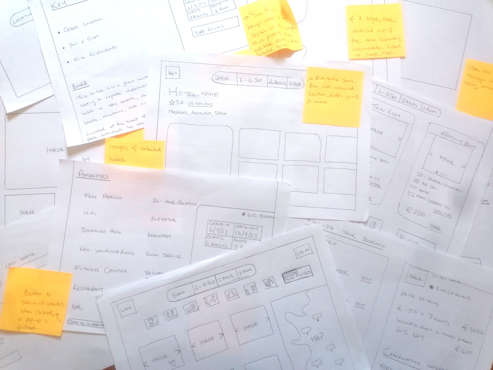

Stay.com
An Enhanced Hotel Booking Experience

Stay.com is a desktop app developed during my UX Design Professional Diploma, aimed at addressing common user experience issues found in hotel booking platforms. This project builds on successful design patterns while resolving usability challenges, creating a streamlined, user-friendly booking process.

The Problem
Many hotel booking websites suffer from poor usability, frustrating users with confusing navigation, unclear information, and inefficient booking processes. The goal was to create a website that prioritises intuitive design, clarity, and efficiency, delivering a smoother and more pleasant booking experience.
The Process
To identify key issues, I conducted user research through competitive benchmarking, surveys, and user testing. These findings were synthesised into six primary usability problems using affinity mapping, customer journey mapping, and user flow diagrams. Low-fidelity sketches were developed, followed by a high-fidelity interactive prototype in Figma, which was tested for effectiveness and refined based on user feedback.

Research
Research Method and Tools
To ensure credible findings, I applied a triangulation method, incorporating competitive benchmarking, user surveys, interviews, and usability testing. This cross-referenced data helped identify patterns and solidify insights, ensuring that the design decisions were based on comprehensive research.


Analysis
Using tools such as affinity mapping and customer journey maps, I synthesised the unstructured research data into six key insights that directly influenced design decisions.
Analysis Findings
- Interface Design: Busy interfaces with poor readability (small fonts and low contrast) frustrated users and increased cognitive load.
- Flow Design: Users frequently experienced disjointed flows, leading to restarts and premature decisions.
- Search Functionality: Buggy calendars and difficulties finding hotel locations made search tasks cumbersome.
- Option Comparison: Excessive scrolling and information overload prevented users from effectively comparing hotels.
- Adding Extras: Unclear descriptions, confusing pricing, and inconsistent options created friction when adding extras.
- Booking Completion: The lack of transparency in the final booking steps created uncertainty for users.
Design Implications
These findings had a significant impact on the design:
- The interface needed to be simplified, with improved readability and reduced clutter.
- The flow had to be redesigned to offer more flexibility and guide users through a seamless booking process.
- The search experience required a more intuitive and reliable calendar and map interface.
- Option comparison needed to be streamlined with better filters and layouts to reduce scrolling.
- Extras had to be presented clearly, with dynamic feedback to avoid confusion.
- Booking completion required enhanced transparency and a clear summary for final confirmation.
Design
Finally, I used Figma to build a high-fidelity interactive prototype for evaluative testing.
Sketches
I started with sketches to quickly map out design ideas based on the issues found in the analysis. These sketches helped visualise the booking flow, user interface, and layout while allowing me to identify and address potential issues early in the process.
Sketch Example (with annotations):
- Arrow pointing to sketch layout: "Initial wireframe sketch for the streamlined booking flow."
- Arrow pointing to navigation: "Concept for breadcrumb navigation to enhance user orientation."
- Arrow pointing to calendar sketch: "Early design for the booking calendar to improve usability."
User Flow Diagram
Next, I created a user-flow diagram to refine the user's path. This also helped identify problems early on and iterate quickly.

Prototyping
After finalising the design with sketches and user flow diagrams, I developed a high-fidelity interactive prototype in Figma for evaluative testing.
Design Solutions Breakdown
Streamlined Interface Design
The interface was simplified to focus on key booking elements, reducing cognitive load.

Evaluative Testing
I conducted user tests to evaluate the design's effectiveness by having users book a hotel room through the prototype. Key findings include:
- Interface Design: Generally well-received, though text size was occasionally noted as too small.
- Flow: Smooth overall, though breadcrumb navigation had minimal impact.
- Search: Calendar interaction was smooth, but map functionality needed refinement.
- Option Comparison: Users found it easy to compare options but wanted more overview information.
- Adding Extras: Clear navigation, though some users found checkboxes confusing.
- Booking Completion: Users were satisfied with the summary but noted that text size could be larger.

Further Development
Based on user feedback, I identified key areas for future improvement:
- Increase text size in key areas for better readability.
- Provide more overview information to reduce uncertainty during option comparison.
- Ensure breadcrumb navigation is consistently used throughout all stages of the booking process.
- Refine map functionality for smoother interaction.
- Clarify the purpose of checkboxes in the extras window to reduce confusion.